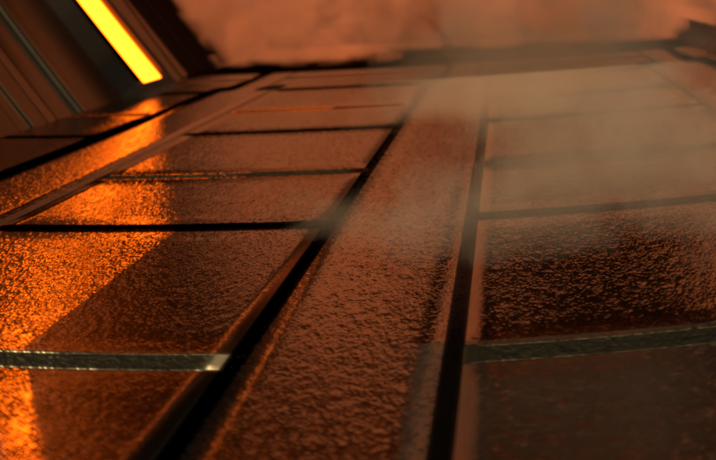

# Environment Map Emitter
Environment map emitters are a really nice way how to add natural lighting to a scene.
By using high definition range images (HDRIs in short), we don't constrain the image by using only values in the interval `[0, 255]`, but in an "open" interval `[0, ∞)`, to be able to represent high radiant things like the sun.
The environment maps are parameterized by a 2D HDRI, which is then wrapped around an infinite sphere around the scene.
The other advantage of using environment maps is that if you have reflecting materials in the scene, it adds quite a few details and makes everything look super realistic, as you will see in the validation scene.
Our Interpretation of Starry Night, implemented using our Environment Map
## Implementation Details
Relevant files:
- `dpdf.h`
- `d2pdf.h`
- `envmap.cpp`
- `scene.h / scene.cpp`
- Many negligible files to add a new xml tag and add the `envmap` to the `warptest.cpp` utility.
An environment map is defined as a attribute of a `Scene`, as it surrounds all the content inside it.
The integrators have to take care of when to actually access the environment maps, for which we have two cases:
1. First, if a `ray` hits nothing (the void), the integrators needs to access the environment map at the "infinite" away position of the intersection. This only depends on the direction of the ray, as for the infinite sphere, the translation of the ray is negligible.
2. If we do NEE, it should be possible for the integrator to sample from the environment map, as it still is an emitter.
Hence the `envmap` got added not only to the `Scene` itself, but also to the vector of emitters.
Just as we have seen in the lecture, the environment map needs to be important sampled to have a smooth result without too much noise.
Thus the bitmap of the HDR file can be mapped to a 2D discrete distribution, which was implemented in `d2pdf.h`.
The 2D discrete distribution was implemented with the paper "Monte Carlo Rendering with Natural Illumination" from Pharr et al., where they define a distribution over $(u, v)$ and map it afterwards to a distribution over the solid angle $p(\omega)$. The joint probability can be implicitly modeled as a conditional distribution:
$$p(u, v) = p(u) \cdot p(v \mid u).$$
Hence we first sample from the $u$-axis and use it as condition to sample from $p(v \mid u)$, which gives us a $v$ coordinate. The resulting point $(u, v)$ is mapped to the solid angle afterwards.
We have to be careful to map between distributions in different coordinate systems. A complete derivation of the implemented transformation is given in the paper.
One more thing we have to note is that the spherical mapping is not isotropic throughout the bitmap, hence we scale the `u` coordinate with a geometric $\sin(\theta)$ term to get a nice uniform sampling on the surface.
From the theory above we can see that we can model the discrete 2D distribution by using $N + 1$ discrete 1D distributions, where $N$ is the height of the image (one to sample the row and one per row for the columns).
I've thus extended the already included 1D distribution in Nori, defined in the file `dpdf.h`.
## Validation
To compare the implementation of the environment map, I've used the "Symmetrical Garden 02" HDRI from [polyhaven.com](https://polyhaven.com/a/symmetrical_garden_02), shot by Dimitrios Savva and Jarod Guest.
Taking this as environment was quite the challenge at first, as it does not only have 4 channels, but the sun inside the environment map has values up to `(53409, 54345, 61613)`, which correspond to pixels inside the sun. Other white pixels, for example the clouds line in the range of approximately `(1.3, 1.4, 1.5)` - a huge difference.
Because we have to normalize the PDF distributions, other values next to the sun almost have zero probability - a floating point error feast.
Hence it pushed me to write floating point stable code as good as possible.
Environment Map Emitter comparison for path MIS with 64 SPP
The first validation scene shows an empty scene with the defined HDRI as environment map with a dielectric sphere, a diffuse sphere, as well as a mirror sphere.
Because of the high values inside the sun, you can see a really cool gradient on top of the diffuse sphere. Also because of the small PDFs, Mitsuba struggles a bit which results in some fireflies.
Warptest Integration for Environment Map Important Sampling
The next validation shows an integration of the important sampling of the environment map into our `warptest.cpp` toolkit.
If we would render it with the sun, there would just be one red spot in the corner where the sun shines from.
Therefore I've clamped the HDRI a bit to have a more accurate representation of the HDRI in the point cloud on top of the sphere.
Warptest Sampling vs Integration Comparison
When running the $\chi^2$-test, you can see the radiance density for each pixel, which represent the underlying used HDRI.
## Discussion
The problem with using HDRIs with huge variance in illumination, is that this variance is also defined for the normalized probability distribution.
Hence writing a concrete discretization which is bidirectional between `sampling` $\leftrightarrow$ `pdf of sample` is not so easy. It would be nice to find a cleaner way of doing that in the future. Lastly a rotation property could be add the the environment map.
## References and Relevant Links
The implementation follows a mixture of:
- [PBRT-v3](https://pbr-book.org/3ed-2018/contents), chapter 12.6 and 14.2.4 for some code references.
- Pharr, Matt, and Greg Humphreys. "Monte Carlo Rendering with Natural Illumination." for some theory insights + a more natural way how to sample discrete 2D distributions.
# Images as Textures
The easiest way how to add details to the scene without affecting the geometry is probably by adding images as textures.
Each mesh can come with a predefined UV-coordinate per vertex, which define the texture coordiantes inside a 2D image texture.
By interpolating the UV-coordinates on each intersection with the mesh around it's neighboring vertices in the triangle, gives us a discrete description of the albedo behind it.
This formulation also goes really well with how BSDFs are defined in Nori - as all the image texture does is affecting the albedo. Thus we can have nice metals or microfacet materials with colored details.
Mickey Mouse form Steamboat Willie textured using our Image Texture
## Implementation Details
Relevant files:
- `image.h`, `image.cpp`
- `imagetexture.cpp`
Just as with our `checkerboard.cpp`, our new `imagetexture` extends the `texture` definition from nori.
To load in the `png` files, I've used the [`stb_image`](https://github.com/nothings/stb) library, as it's writer was already imported into nori and it has a really interface how to read images as arrays in.
The current implementation of images in the class `Image` supports `RGB` images, where I've used the inverse gamma correction, implemented in `Color::toLinearRGB`, to get the tone mapping from Mitsuba if that's necessary.
To read in an image, we first scale the image to `[0, 1]` and do the possible inverse gamma correction for tone mapping.
Afterwards given two coordinats $u, v \in [0, 1]$, it reads out the pixel values.
The `ImageTexture` class then connects the `Image` with the actual BSDF by converting arbitrary UV-coordinates querried by the BSDF with the `Image` implementation by normalizing the coordinates to `[0, 1]` with a repeating mechanism - although we did not use that in our final scene.
One small addition is that `stb_image` reads in the image from top-left to bottom-right, whereas UV-coordinates are defined from bottom-left to top-right. Hence we need to flip the `v` coordinate.
## Validation
The validation is done by putting test-texture images on top of spheres and arbitrary meshes to see that it works for arbitrary shapes.
Textures Comparison for Spheres
The textures used for the sphere validation are taken from [polycount](https://polycount.com/discussion/186513/free-checker-pattern-texture) and from [Maxon](https://help.maxon.net/r3d/maya/en-us/Content/html/UV+Projection.html).
Textures Comparison for a Simple Mesh
The `obj` is just a simple cube with a Minecraft texture put on top, which was taken from [sketchfab](https://sketchfab.com/3d-models/minecraft-cube-690644b638ce46b2b713ed2236e0a9e1).
Textures Comparison for a Complex Mesh
The Mickey Mouse was taken from [cgtrader](https://www.cgtrader.com/free-3d-models/character/other/riggd-mickey).
## Discussion
It might not feel or look like it, but this features was my [nemesis](https://dictionary.cambridge.org/dictionary/english/nemesis) - and that's because Nori uses a left-handed coordinate system, whereas almost all other softwares use a right-handed coordinate system.
Thus when first defining my validation scenes, the textures were always flipped in the `x` direction.
I've spent hours looking into what transformation I am missing until I found the solution by scaling the camera by the vector `(-1, 1, 1)` to implicitly convert the coordinate system into a right-handed one.
This feature could be extended in the future by adding a nice scaling parameter for both directions, as well as a possible choice of potential boundary conditions like `repeat`, `zero`, etc. Also it would be nice to do bilinear or cubic interpolation between the pixel values in the future.
# Normal Mapping
Having images as textures is nice, but without touching the geometry, everything still looks flat.
Using normals maps together with image textures is a nice way to perturb the mesh normal's in such a way, that the light interaction adds a sense of depth to the image, which implicitly adds more geometric details as well.
We've opted to implement normal mapping instead of bump mapping, to be able to precisely affect in which direction normals should point to. Also, there are lots of really good looking normal maps, which can be used for our final scene.

Completely flat floor details added with our Normal Texture
## Implementation Details
Relevant files:
- `normaltexture.cpp`
- `mesh.cpp`
We've implemented normal map peturbation for meshes, such that we can simply add a normal map in `xml` to modify its normals. The implemenation of `NormalTexture` is similar to `ImageTexture`, with the difference that it does not store colors, but normal vectors.
Given a UV-coordinate, we map it using the same algorithm as in `ImageTexture` to access the pixel information, but instead of inverse gamma correcting, we take the color values and map it to a vector of coefficiens in `[-1, 1]` by using the transformation $2 \cdot x - 1$ for $x \in \{R, G, B\}$.
The color values in the normal map are defined, such that this transformation results in a 3D vector on the unit-sphere, which represents the normal peturbation.
Nori per default does not create a continuous tangent space for Mesh normals, which is needed for normal textures.
This is because the normal texture always assumes that the un-perturbed normal vector is pointing in the positive `z`-direction, which is obviously not the case for most meshes.
[learnopengl.com](https://learnopengl.com/Advanced-Lighting/Normal-Mapping) has a very nice picture, describing exactly that phenomenon, which I won't include because of licensing issues - but you can click on the link.
Hence we needed to extend the `Mesh::setHitInformation` method to generate a continuous shading frame over the whole mesh - given UV-coordinates per vertex.
To implement the continuous tangent space, I've oriented myself after [learnopengl.com](https://learnopengl.com/Advanced-Lighting/Normal-Mapping), which I've used back in Visual Computing to get correct normal maps orientation.
This was only semi-useful, as we are not working with OpenGL, but it helped quite a lot to understanding the underlying problem.
Thus to make the connection to Nori, I've used PBRT-v3 chapter [3.6](https://pbr-book.org/3ed-2018/Shapes/Triangle_Meshes).
In short, we try to approxiate $\frac{dp}{du}$ and $\frac{dp}{dv}$ by using the mesh-triangle coordinates and a fancy adjugate matrix trick to solve a linear system of equations. As these two vectors are continuous per definition, we can calulate their cross-product get a fully defined continous tangent space.
The last thing is to perturb the intersection normal by accessing the normal texture and peturb it in local shading space, using the function `Intersection::applyNormalMap`.
## Validation
The normal map validation follows a similar approach as the textures.
Normal Map Comparison with Normals facing the `z`-Direction and Area Light
The first validation scene should work, even if there is no continuous tangent-space. The texture is taken from [Wikipedia](https://en.wikipedia.org/wiki/Normal_mapping#/media/File:Normal_map_example_with_scene_and_result.png).
Normal Map Comparison with Normals facing an arbitrary Direction and Point Light
The second validation scene is the same scene as the first one, but everything rotated globally by 90-degress.
This makes that the plane's normal is not showing in the positive `z`-axis anymore, validating that our continuous tangent space is working.
Furthermore I've wanted to test whether it works with point-lights at the same time, because the validation scene from before uses an area light - but I was not able to get the radiance to match up.
Though it should still be sufficient to show that the normal shading is correct.
Normal Map Comparison for Different oriented Faces
The last validation scene is to show off a mesh which has multiple phases with different face normals.
The texture taken for this validation scene is from [3dtextures.me](https://3dtextures.me/2020/06/05/brick-wall-018/) and was actually used in the [report](https://cgl.ethz.ch/teaching/cg23/www-nori/example_reports/schuerch_roost/feature-normal-mapping.html) from Jennifer Schürch, back in 2023.
## Discussion
Normal maps had the same problems as image textures, namely the flipped coordinate system.
All additions which can be added to the images as texture feature, could be added to the normal maps as well.
## References and Relevant Links
- [learnopengl.com](https://learnopengl.com/Advanced-Lighting/Normal-Mapping) for continous tangent-space theory
- PBRT-v3 chapter [3.6](https://pbr-book.org/3ed-2018/Shapes/Triangle_Meshes) for implemenation help.
# Homogeneous Media
One of the biggest features in our final scenes are heterogeneous volumes, which are built on top of a volumetric light integrator.
In order to sequentially approach this target, I've started implementing homogeneous media, which are volumes having a uniform density throughout with a single scattering and absorption parameter.
Even only using homogeneous media, it's already possible to create impressive renders, as for example Beyza Coban and Jingyuan Li's render which placed 2nd in the [rendering competition](https://cgl.ethz.ch/teaching/cg23/competition/competition.php) from 2023.
## Implementation Details
Relevant files:
- `volume.h`
- `shape.h / shape.cpp`
- `ray.h`
- `path_mis_volume.cpp`
- `path_mats_volume.cpp`
- `trivial_bsdf.cpp`
- `empty_volume.cpp`
- `homogeneous.cpp`
- `homogeneous_ms.cpp`
- `isotropic_phase_bsdf.cpp`
The implementation closely follows the SIGGRAPH course [Production Volume Rendering](https://graphics.pixar.com/library/ProductionVolumeRendering/index.html), because they have a very intuitive code structure and debugging volumes is hard.
Hence having a look at my code will reveal much inspiration from theirs, though everything is cited in the code as well.
The methodology in [Production Volume Rendering](https://graphics.pixar.com/library/ProductionVolumeRendering/index.html) diverges quite a bit from PBRT-v3, as instead of defining volumetric inferfaces for shapes, the media gets treated as a direct part of the a shape.
The phase function which defines scattering function inside the volume is a concrete definition of the `BSDF` interface.
It is built in such a way that the light integrator (in our case `path_mis.cpp`) only needs minor adjustments, which are listed below:
1. The integrator needs to account for emittance if the camera ray hits an emitter. This logic needs to be extended, such that if the camera ray hits a shape with an attached volume, it actually computes the transmittance through this volume and check if an emitter is behind it adds the emittance multiplied by the accumulated transmittance to the radiance. Note that this change was only done in `path_mis_volume.cpp`, because of timing reasons.
2. It is not sufficient to just do a shadow ray intersection test for NEE, as the shadow ray could penetrate a volume. This step is called the calculation of *beam transmittance*, which is implemented as `Scene::computeBeamTransmittance`. Hence if a shadow ray hits a shape with an attached volume, we send the ray in the same direction through the volume and account for transmittance. This is done till we either hit an opaque object or we hit the `maxt`, defined on the ray.
3. When hitting a shape with a volume inside it, we need to check whether the sampled $\omega_o$ penetrates the surface of the shape, if so, we need to start integrating the radiance throughout the volume itself. The throughput of the light integrator needs to be adjusted to account for possible transmittance inside the volume.
I've extended the `Shape` class by adding a `Volume` to it. Each `Volume` consists of two basic functions:
1. `Volume::integrate`: Integration function which integrates the radiance through a volume.
2. `Volume::transmittance`: Calculate the transmittance between two points inside the volume.
Also each volume has a phase function attached, which is responsible to sample the next ray direction inside the volume. Thus by adding flags to both the `Ray`, as well as the `Intersection`, it is possible for the light integrator to find out whether the current intersection point is a real surface intersection or a "virtual" intersection inside the volume.
In the first case the light integrator continuous as normal and samples the BSDF of the surface, whereas in the later the light integrator samples the phase function and integrates the ray again with the current `Volume`.
To make the volumes actually usable, we need to define a `TrivialBSDF` function, which just sends the `Ray` hitting it in the same direction further. Thus a general shape with a trivial BDSF and a homogeneous volume has no surface interaction, but accounts for radiance inside the volume.
Homogeneous media has been implemented in two variants, first with sigle scattering and afterwards with multiple scattering, as we have seen in the lecture. As a short recap:
- *Single Scattering*: The volume sends the ray through the whole volume directly and samples a single scattering location parameterized by the exctinction and absorption parameters of the volume. At that scattering location, it calculates emitter as well as material contribution and accumulates the radiance using a MIS step. This is the direct equivalent to direct light integration.
- *Multiple Scattering*: The volume sends they ray not directly through the volume, put samples a new scattering location inside the volume along the ray direction. As the homogeneous volume has nice properties, we can actually perfectly importance sample that location. Instead of calculating the radiance inside the `Volume`, it adapts the `Intersection`, such that the light integrator can calculate all contributions (emitter + material) for it. The only difference is, that when sampling the phase function, we don't account any geometric term.
## Validation
Comparison of an empty cbox vs a cbox with an invisible volume
To test whether my code runs OK, I've implemented an empty, invisible volume in `empty_volume.cpp`. This volume does not change the throughput or the radiance, but only the intersection point and the ray.
Comparison of homogeneous volumes with $\alpha = 0$ and $\sigma_t = 2$
The first validation scene, checks whether the implementation of absorptive volumes with $\alpha = \frac{\sigma_s}{\sigma_t} = \frac{\sigma_s}{\sigma_s + \sigma_t} = 0$ (thus $\sigma_s = 0$) is correct, by validating against Mitsuba V3. Here we can see that single scattering is actually a very nice approximation for these kind of volumes.
Comparison of homogeneous volumes with $\alpha = 1$ and $\sigma_t = 2$
The second validation tests the implementation for scattering volumes ($\alpha=1 \implies \sigma_a = 0$).
It is quite astonishing how much the single scattering volume diverges from the multiple scattering one.
This clearly shows that single scattering is not sufficient to model more complex volumes like clouds.
Comparison of homogeneous volumes with $\alpha=0.5$ for $\sigma_t \in \{1, 2\}$
To show that the implementation of mixed volumes with both scattering and absorption works as well, I've included these tests even with different extinction values - which should provide enough evidence that the implementaiton is actually correct.
The noise from these renders come from the same reason as with the renders from PA4, by not starting the Russian Roulette only after a ray depth of 3, which is what is used in Mitsuba.
## Discussion
The discussion for volumes will be held in the chapter for heterogeneous media.
## References and Relevant Links
- [Production Volume Rendering](https://graphics.pixar.com/library/ProductionVolumeRendering/index.html): Theory + pseudo code
- [Mitsuba V1](https://github.com/mitsuba-renderer/mitsuba): Clean implementation reference for a simple MIS path integrator with volumes
# Anisotropic Phase Function
To have more control on the light distribution in the media, we've implemented the Henyey-Greenstein phase function.
This enables us to define whether the volumes should be forward scattering like clouds or backwards scattering like dusty smoke.
Backward facing Dirty Plume and Dust, and forward facing Background Cloud, using Henyey-Greenstein
## Implementation Details
Relevant files:
- `anisotropic_phase_bsdf.cpp`
The implementation is a straight nori version of the code given in [Production Volume Rendering](https://graphics.pixar.com/library/ProductionVolumeRendering/index.html).
As our implementation uses phase functions just like BSDF, the only thing to do there was to implement the `sample`, `eval` and `pdf` function, which were given in the script, as well as on the lecture slides.
## Validation
Homogeneous Volumes using the Henyey-Greenstein phase function with $g \in \{0.7, -0.7\}$
As one can clearly see, the forward scattering brightens up the whole cbox room, as the light scatters through the volume to the floor, gets reflected by the diffuse BSDF and hits back again through the volume - which makes the whole scene super bright.
In contrast, the backward scattering "reflects" most of the light back, making it darker, but the ceiling way brighter.
## Discussion
In the future it would be nice to add the Henyey-Greenstein Phase function to the `warptest.cpp`, just as we did with the Environment Map Emitters.
## References and Relevant Links
- [Production Volume Rendering](https://graphics.pixar.com/library/ProductionVolumeRendering/index.html): Theory + pseudo code
# Heterogeneous Participating Media
The difference between the already discussed homogeneous media and the heterogeneous media is, that heterogeneous media does not have a uniform absorption and scattering coefficient throughout the whole volume, but is defined by an underlying density field. It can be seen as a grid made out of homogeneous volumes, each with it's defined extinction and absorption coefficient.
This makes it possible to define an arbitrary shaped volumes which adds lots of details to the final render.
Dirty Steam Smoke coming out of the Chimney using our Heterogeneous Media
## Implementation Details
Relevant Files:
- `grid.h / grid.cpp`
- `heterogeneous.cpp`
- `heterogeneous_ms.cpp`
The implementation is also heavily inspired by the pseudo code given in [Production Volume Rendering](https://graphics.pixar.com/library/ProductionVolumeRendering/index.html).
The implementation uses [NanoVDB](https://developer.nvidia.com/nanovdb), the little sibling of the industry standard [OpenVDB](https://www.openvdb.org/) to load in a density grid, which we integrate over.
The huge advantage of using NanoVDB is that is it completely header only, making it super easy to integrate into Nori.
Altough the documentation is a bit hard to follow, using the NanoVDB integration from [PBRT-v4](https://github.com/mmp/pbrt-v4), it is quite nice to load in a density grid and access values according to some grid indices.
The most difficult thing integrating NanoVDB, was the separation from Volume-Grid-Coordinates to Nori's world coordiantes.
Each `nvdb` file comes with it's own coordinate system and bounding box, which we have to map to Nori.
This was done by implementing a simple `Grid` shape, which is an axis aligned bounding box, taking advantage of the already defined intesection tests in `bbox.cpp`.
the implementation was extended with a `transform` attribute, which makes it possible to scale, translate or even axis-rotate the volume itself.
Thus each heterogeneous volume is is a part of such a `Grid`. When the volume is loaded as child of the grid, the grid copies the bounding box from the `Volume` and uses it's `Transformation` to map it to Nori space. This makes it really easy to place the volumes in different parts of the code. When integrating throughout the volume, we need to always apply the inverse transform, such that the lookup into the density grid actually are in Volume-coordinates instead of Nori-coordinates.
To get from density, which is defined in the `.nvdb` files, to extinction ($\sigma_t$), we multiply the density by a global "density scaling coefficient", just like [Mitsuba](https://www.mitsuba-renderer.org/) does. Furthermore the albedo ($\alpha = \frac{\sigma_s}{\sigma_t}$), is defined globally on the volume as well.
We've implemented Delta-Tracking to calculate the scattering points inside the volume where we use the maximum density inside the grid as Majorant. The nice thing about delta tracking is, that it can actually only be defined in terms of the ratio between current density and majorant density, as everything cancels out nicely in the formula - thus not resulting in zero-divisions when setting the global albedo.
## Validation
Heterogeneous Media Comparison with the [Standford Bunny](https://www.openvdb.org/download/)
The first validation scene was done with an albedo $\alpha = 1 \implies \sigma_a = 0$. The difference between Mitsuba's render and mine are, that the density scaling is quite different. In Nori the scaling was set to $2$ and in Mitsuba it was set to $70$ - this is the reason why the two renders don't match perfectly.
Also Mitsuba needs another bounding shape for each heterogeneous volume for which I've used a cube. Even after some time, I was not able to exactly position the cube on top of the bunny, hence why it's ears are cut off. It should still show validation, that the integration of the volume itself is implemented correctly.
Effects of Henyey-Greenstein phase function on a plume, simulated for the almighty [IPIC Paper](https://studios.disneyresearch.com/2024/04/25/the-impulse-particle-in-cell-method/) written by the prodigy Sergio Sancho et. al. which resolution is only $256 \times 512 \times 256$ but completely crushes industry standard APIC renders by conserving the kinematic energy way better using impulse gauge variables and using auxiliary particles to approximate the deformation gradient in a flexible and stable maner.
In the last validation file you can actually see the influence an anisotropic-phase function has on heterogeneous media.
## Discussion
The implementation of the single-scattering heterogeneous volume took quite a while, as I had some error updating the throughput in the path MIS integrator.
After being happy with the submission, I must admit that integrating volumes was a blast.
I really like how intuitive it is to integrate it on top of an already working light integrator, using the phase functions as BSDF and so on.
## References and Relevant Links
- [Production Volume Rendering](https://graphics.pixar.com/library/ProductionVolumeRendering/index.html): Theory + pseudo code
- [PBRT-v4](https://github.com/mmp/pbrt-v4) for NanoVDB integration.
# Additional Features Implemented
Preparing for the final scene we have decided that it would be best to create our own custom space hangar, which does not have too much complexity, but still looks good.
The most important thing for us was that it should be easy to import it into Nori.
In the end we got a nice looking space hangar, which was done by me with awesome looking textures from Orion.